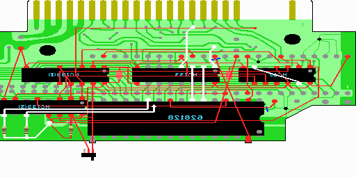

14．配線の山場（４／４）
ここでの配線は回路図で紫色でかかれている部分です。

1. HC74の6ピンとHC74の13ピンをつなげます。
2. スロットの20ピン(A10)とHC133の1ピンをつなげます。実体図を参考にしてください。スロットの20ピン(A10)はSRAMの23ピンとつながっていますので、そことHC133の1ピンをつなげても構いません。つなげる場所を間違えやすいので注意してください。
3. スロットの24ピン(A8)がSRAMの27ピンに来ていますので、そこととHC133の2ピンをつなげます。
4. スロットの17ピン(A9)がSRAMの26ピンに来ていますので、そこととHC133の3ピンをつなげます。
5. スロットの21ピン(A7)とHC133の4ピンをつなげます。実体図を参考にしてください。スロットの21ピンはSRAMの5ピンとつながっていますので、そことHC133の4ピンをつなげても構いません。ここもつなげる場所を間違えやすいので注意してください。
6. HC139(2)の11ピンと表のSRAMの22ピン、HC139(2)の9ピンと裏のSRAMの22ピンをつなげます。HC139(2)の11ピンと裏のSRAMの22ピン、HC139(2)の9ピンと表のSRAMの22ピンの組み合わせでも構いません。いずれにせよ表のSRAMの22ピンと裏のSRAMの22ピンがつながらないようにしてください。
7. 最後にHC139(2)の9ピン、11ピンに抵抗をつけ、5Vへとつなげます。
 次へ
次へ